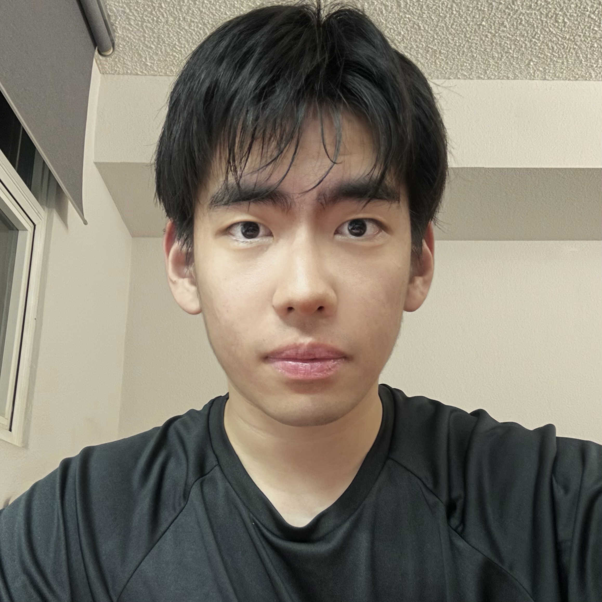

|
Xiaojun Shan
I am currently a Ph.D. student at UCSD, where I am fortunate to be advised by Prof. Zhuowen Tu and Prof. Zhijian Liu.
My research interest lies in machine learning in general, with a special interests in controllable generation and efficient vision language models.
I am looking for a summer intern position now. I am also open to exploring extensive topics and collaborating with others. Feel free to drop me a mail!
Email /
CV /
Google Scholar /
Twitter /
Linkedin /
|

|
|
Selected Publications (* indicates equal contribution)
|
DrivingGaussian: Composite Gaussian Splatting for Surrounding Dynamic Autonomous Driving Scenes
Xiaoyu Zhou,
Zhiwei Lin,
Xiaojun Shan,
Yongtao Wang,
Deqing Sun ,
Ming-Hsuan Yang
IEEE Conference on Computer Vision and Pattern Recognition (CVPR), 2024
[Paper]
|
Enhancing Knowledge Transfer for Task Incremental Learning with Data-free Subnetwork
Qiang Gao*,
Xiaojun Shan*,
Yucheng Zhang,
Fan Zhou
Advances in Neural Information Processing Systems (NeurIPS), 2023
[Paper]
|
Intern Experience
-
Jul 2024 -- May 2025, Massachusetts Institute of Technology, Boston, US
Research Intern, supervised by Prof. Paul Liang.
-
Oct 2024 -- Mar 2025, University of California, San Diego, San Diego, US
Research Intern, supervised by Prof. Nuno Vasconcelos.
-
Feb 2024 -- May 2024, Westlake University, Hangzhou, CN
Research Intern, supervised by Dr. Jun Xia & Prof. Stan Ziqing Li.
-
Sep 2022 -- June 2024, Peking University, Peking, CN
Research Intern, supervised by Dr. Xiaoyu Zhou & Prof. Yongtao Wang & Dr. Deqing Sun & Prof. Ming-Hsuan Yang
-
Jul 2022 -- May 2023, University of Electronic Science and Technology of China, Chengdu, CN
Research Intern, supervised by Prof. Fan Zhou & Prof. Qiang Gao
|
Academic Services
-
Journal Reviewer:
ACM TOIS
Conference Reviewer: NeurIPS, CVPR, ICML, ICCV, ECCV, ICLR
|
|
{kind=link}